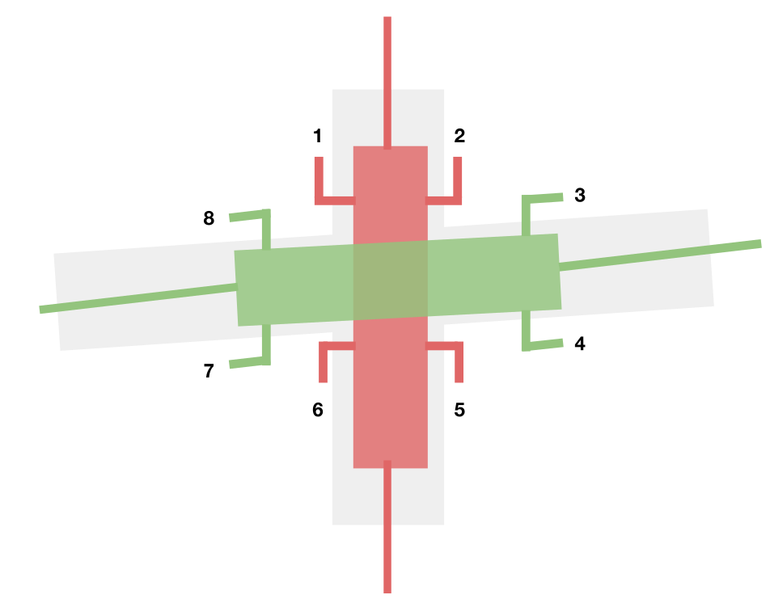

What
In East Asian countries it is common to number subway exits (出口). These numbers link the subway station to the surrounding streets, making it easy to navigate between them.
Numbered exits make it easier to know which exit is closest to where you want to go. You can make sure that you don't exit from the wrong end of the station (always a pain).
It is easier to give directions with numbered exits. Businesses could list not only the closest subway station, but also the closest station exit to their location. Friends can agree to meet at a specific exit.
Why don't Western subway systems have numbered exits?
How
It would be easy to set up a system that would uniquely identify each exit and give riders information about each exit's relative position. For example, we could number each station exit in a clockwise order starting from the north-eastern most exit.
